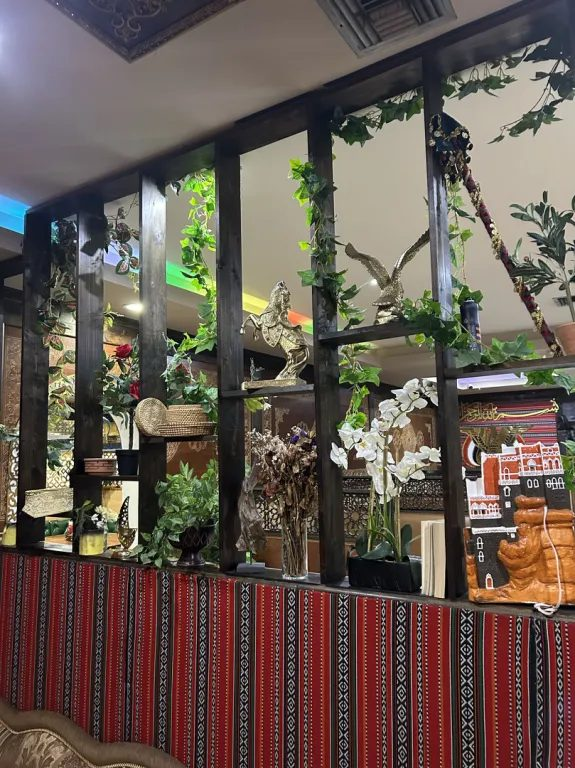
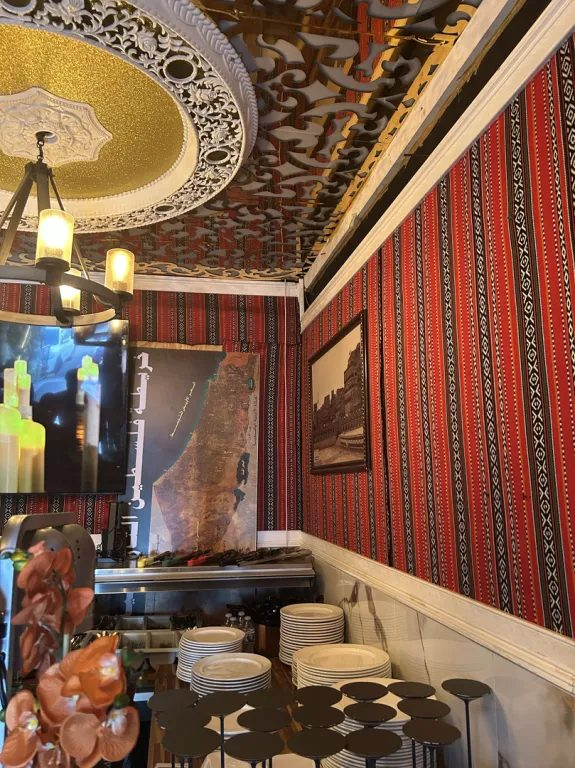
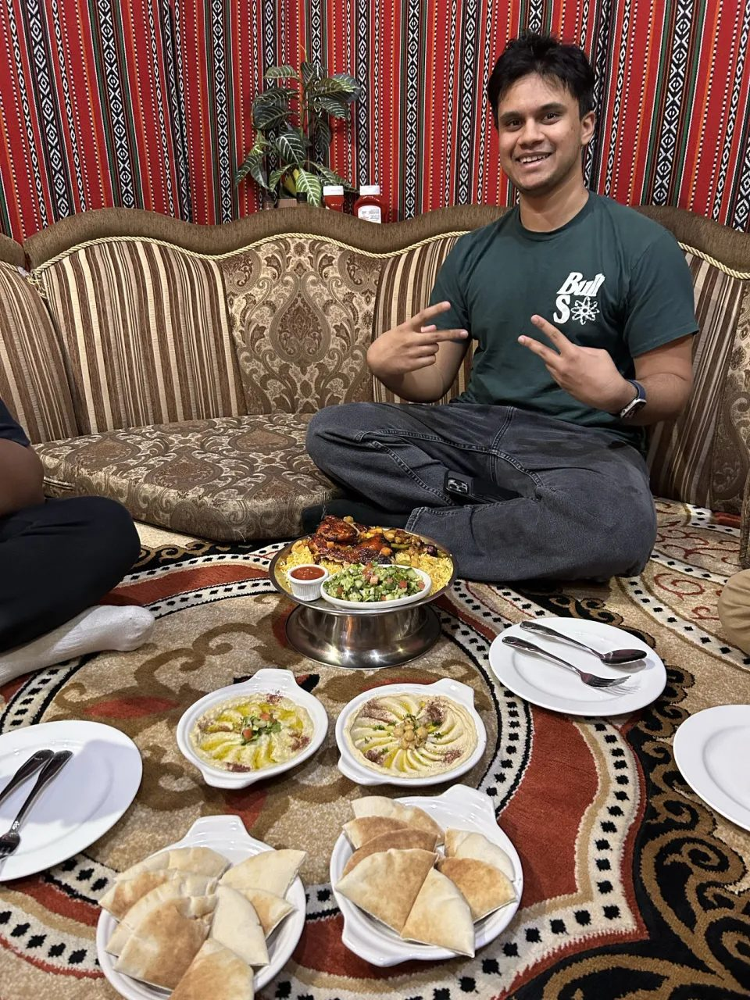
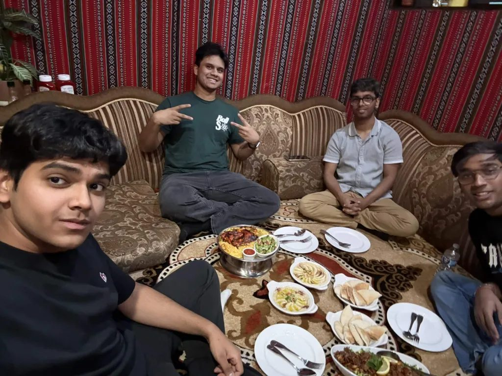
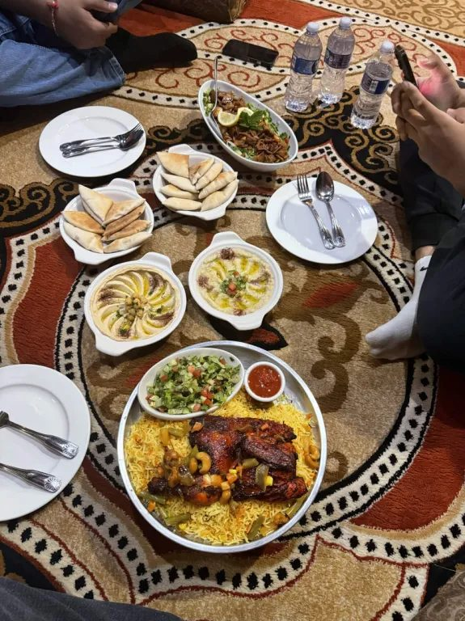
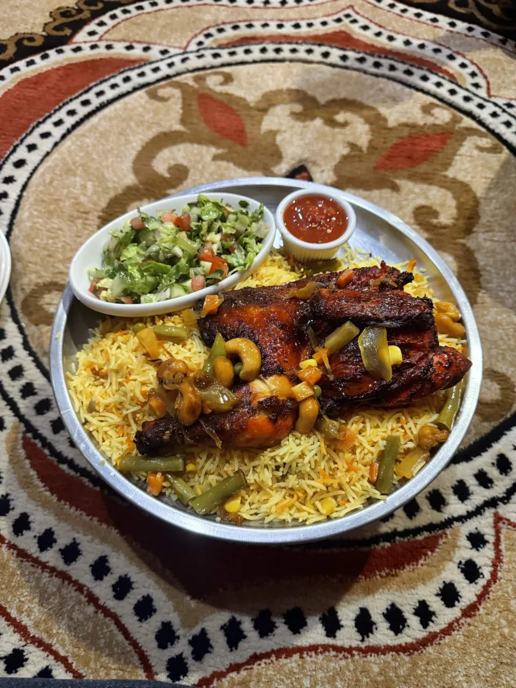

When our group, being Aarav, Tanish, Sarthak, and I, decided to visit Abu Naji on Busch Boulevard for our Khaleeji cuisine project, we expected to have to hunt for points to talk about in our presentation and reflections. That was not the case, and Abu Naji truly delivered on keeping a somewhat authentic experience that we were hoping for. Because Yemen shares deep food traditions with its Gulf neighbors, it felt like the ideal place to explore regional flavors, and it delivered.
The Room's Story
The restaurant introduced us to its heritage before we even saw a menu. The walls were wrapped in red woven fabric featuring black and white geometric patterns, closely mirroring the traditional Al Sadu weaving of the Gulf. A framed photograph of Cairo Castle in Taiz hung nearby, while a shelf held woven baskets, brass figures, and a model of a Yemeni tower house. With carved ceilings overhead and soft Arabic music playing, the space was clearly designed to share a culture, not just a menu.


Sitting Low, Eating Together
The most transformative part of the meal was the majlis-style seating. We chose to sit on the floor around a large, patterned carpet bordered by low, cushioned sofas. All the food was placed in the center, eliminating the concept of a private plate. If someone needed a piece of pita, they had to reach across the shared space or ask another person to pass it. While the first few minutes felt slightly unfamiliar, the awkwardness quickly faded, and our conversation grew louder and more relaxed. Experiencing this seating arrangement firsthand demonstrated how physical space influences social interaction.


Tasting Authentic Techniques
We shared a spread of hummus, baba ghanoush, fattoush, and fries. My initial reaction to the dips was that they were quite mild, but analyzing the regional ingredients revealed their authenticity. Coming from the Levant, these dips are meant to highlight the natural flavors of tahini, lemon, garlic, and roasted eggplant rather than heavy spices. The tangy, crunchy fattoush provided an excellent contrast to the creamy textures.

For my main course, I ordered the chicken mabdi, which arrived on a raised platter featuring yellow rice and chicken with beautifully crisp, charred skin. Comparing this to mandi on the menu highlighted distinct cultural cooking techniques: while mandi is traditionally slow-cooked in a pit or clay oven, mabdi is grilled over charcoal on hot stones. Studying these specific preparation methods turns a meal into an active exploration of traditional foodways.

A Shared Heritage
Speaking with a staff member added another layer to our understanding. He explained that he was from the broader Khaleeji region, not specifically Yemen. It was a clear example of how culinary traditions transcend borders. Dishes like chicken and rice or mandi are everyday staples across the Gulf, moving and evolving with the people who prepare them. Our lunch at Abu Naji was a powerful reminder that studying cultural cooking means looking beyond the ingredients to the shared human connections they foster.
← Back to all reflections